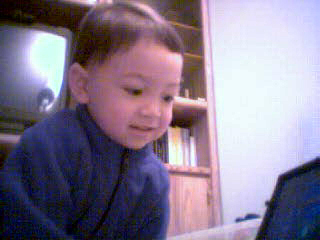

Raising Brian
Early Years (Birth to Age 5)
One of my most joyous experiences was hearing him laugh for the first time. He was about 3 months old. Shanna had him on her shoulder, and I was playing peek-a-boo with him. He laughed and laughed. He laughed a lot like that until he was about 14 years old, then abruptly stopped. His first word was apple.

Brian at 3 years old was an absolute joy (and frustration). He was talking quite a bit. It was mostly nonsense, but cute. He liked to pretend to read books out loud - making up the story as he went along. We got him several more Thomas trains for X-mas - something he desperately wanted. We got him a bicycle for his 3rd birthday, but he didn't like to ride it much yet even though he is able to. At 3 1/2 we enrolled him in the Kumon school for math tutoring. Mostly he did connect the dot exercises and counts things up to 20. For more details on his milestones see Brian's Homepage.
We were at the park in the summer of 2002 when Brian gave us quite a scare by running off. I was on the playground with him at Lake Cunningham Park. We went there to have lunch after a visit to Raging Waters. I saw him go down the slide, and I thought he was circling around to come back up. What he really did, however, was circle around and keep on running in the opposite direction. We could not find him anywhere for about 15 minutes, and we were starting to get really scared. Shanna searched the public restrooms and nearby picnic area, while I jogged in the other direction asking people if they had seen a lost 3-year-old. I finally found him a few hundred yards away. A soccer player had found him crying and was walking him back toward the playground. We tried to explain to him that he should not run off like that, but I'm not sure he got it. There was another time that Shanna recalls. He came out of the condo on his own, in his PJs, and ran around in the rain looking for his mother when she had gone to get the laundry from the laundry room. She was really surprised to see him running around outside since she was just gone for a minute.
February 2003. Brian (almost 4) reached many big milestones. We were really proud of him. He could count and write numbers up to 100. He could sing songs and dance really well. He created his own songs and dances. Until then, I had concentrated more on numbers than letters, but now we are practiced writing the letters in the alphabet, and playing simple games like hangman, mazes, dots-and-boxes, and tic-tac-toe. He is amazing to watch on the computer. He is using it like a pro even though he can't read! He plays all the games on the Lego and other kid's websites. He started being interested in Legos around this age or shortly after. When Bill and I played go, it was very difficult to keep him away from the stones. He would keep trying to eat them.
Brian gets along with all his classmates at the daycare center and plays with them for hours at the playground afterward. We noticed that he plays with the girls more than the boys. He has an imaginary friend called Chucky Mouse that is usually with him everywhere he goes. Brian blames Chucky Mouse for all the bad things he does. Brian never had a problem wetting his bed. For a while we made him wear diapers at night, but since they were never wet in the morning we no longer bothered. At 4, he gets up in the morning and goes to the bathroom all by himself.
Brian at 5 was progressing wonderfully. He could swim and we went to the pool often. He progressed through all the levels at the Happy Fish Swim school - starfish, jellyfish, ... porpoise, shark, etc. After doing that he was ready to join the Newark Bluefins competitive swim team when he got to middle school. He read reasonably well and could do basic multiplication. Grandma and Grandpa Becker visited every July. They got a fish for Brian. He named it George. Blue Martini announced a bad quarter. Worried about impending layoffs. George died 10 days after we got him. In hindsight 2004 was not the best time to buy a big house, but at least it was better than buying in 2006.
Elementary School (Ages 6-11)
Working at home during the 8 years I worked for PROS, gave me more time to spend with my family. Brian was then in the 3rd grade. I saw him when he first wakes up, and I saw him when he comes home from school. I still tried to give him occasional math lessons, but he did not always appreciate my efforts. Every night I read books to him for at least half an hour. Among the books I have read to him are the Hobbit, the whole Lord of the Rings trilogy, Bored of the Rings (a parody), Everything I Need to Know I learned in Kindergarten, Hitchhikers Guide to the Galaxy, Enders Game, the first three of the Thomas Covenant books by Stephen R Donaldson, and many more. Each book could take a few months, but it was an enjoyable process. I thought that by reading to him it would somehow encourage him to also become an avid reader, but the results seemed mixed. He still preferred video games to reading.
Just as I played a lot of games when I was young, I played a lot of different games with Brian as he grew up. When he was very young, we did tic-tac-toe, 5 in a row, hangman, jigsaw puzzles, Lego, Pyraos, Pictionary, hide and seek, Mind-trap, and others. When he was a little older (around 6 - 11 years), we played some more advanced games like Monopoly, Risk, Abalone, Go (of course), more Mind Trap, Trivial Pursuit, Dungeons and Dragons, Stratego, Yugi-Oh, Magic the Gathering, Settlers of Catan, and many others. In all the times that we have played Settlers of Catan, I can't recall a time where he did not win. His sense of strategy is very sharp. I did not like Yugi-Oh or Magic cards, but he was really into it. Trading Magic cards became a big hobby of his as an older teenager.
There was a period of several months where we were very into playing Monopoly. It got to a point where we played very fast and made up lots of crazy rules to make it more interesting. Some of the variations that we tried were
- Have all the properties cost twice as much as their listed price.
- Earn a percentage of your cash on hand when passing go. This was a good way to learn about the power of compound interest.
- If you ran out of money, allow paying debts by doing push-ups or sit-ups. You could get 1 dollar per push-up or for 2 sit-ups. At first, he was the one getting all the exercise, but as we played more, and he got a lot better than me, I can remember getting very sore from all the push-ups and sit-ups.
- Starting the game with 500 dollars instead of the 1500 dollars prescribed by the rules.
Playing Monopoly was such a great way for kids to learn simple math. We played quickly and hyper-competitively. I wasn't easy on him, and I paid the price for that when he got much better than me and crushed me most games. When Pam and Grandma visited and played Monopoly with us, they were a little surprised by the manner in which we played. Over time, the only game he couldn't beat me at was go.
Middle School (Ages 12-14)
In November 2009, I learned to roller-skate - forward and backward. It wasn't really something that I wanted to do, but Brian kept asking to go roller skating. We would go, pay our $20 for the afternoon and then skate. He would get tired of it after about 1/2 hour, but I didn't want the expense to go to waste, so I would end up skating for the rest of the day while he whined about wanting to go home.
In December 2009, I made an HDTV antenna out of coat hangers for my PlusTV PCI cards so I can watch HDTV on it. I still use the same coat hanger antenna for TV reception in 2019. We started with Netflix around 2009 and that used up quite a bit of time too. Brian and I have had the lego Mindstorms spread out in the living room for months. He made a cool shooter robot, and I created a holonomic drive. Later I also made a robot that could balance on 2 wheels.
Brian started taking Kajukenbo at the Dragon's Den in May 2008. I signed up for the open mat program that they had. I would work out with the weights and watch him for his class, and go in on Saturday and hit the punching bags or workout with whoever showed up that day. I also went to Friday open sparring a few times at Dragons Den. It was very much like the old days when I did it at Bakers Tae Kwon Do in Oakland. People from all over, with different martial arts training, would come together to beat the stuffing out of each other for a very small fee. I remember fighting one guy, who would keep picking me up and throwing me on my head whenever I would try to launch an attack on him. Fun, but I already felt I was getting too old for that sort of thing.
Another fun experience was boxing with Nicolo Noche one Saturday during open mat. We wore full head-gear and regulation boxing gloves and pummelled each other. It was fun until after I got hit in the head a few times. Then I quit. I figured that I still might have some more use for my head and the brain that it contained. No more boxing for me. Nico was a really wonderful guy. Always offering to train me on Saturdays, even though he was under no obligation to do so. I was shocked to learn that he died unexpectedly a few years later at age 35 while teaching a class in 2016.
Brian had started out at Hernandez martial arts. I withdrew him from that when I found out that they required signing a contract for at least a year at a time, and at a cost of thousands of dollars. Also, they did not allow any contact when sparring - which I thought was a bit too constrained. I liked the old-school approach of Dragon's Den much better, but I guess it proved a little too rough for Brian. He quit after six months or so. I can't blame him. It was my thing, not his. His thing is swimming, and he is very good at it.
We have a large pool in our community, and while Brian was growing up, we would go swim in it a lot. Sometimes we would race. Of course I could beat him easily at first, but as he became an expert swimmer, I did not have a chance. He swam competitively first for the Newark Blue-fins, then for CDST (California Dolphin's Swim Team) and for the James Logan Varsity swim team. He is on record as being the fastest free-style swimmer in Jame's Logan High School's history. I have seen him do some amazing things in the pool. The pool we have is junior olympic size (25 meters I believe). He could do 3 laps underwater without taking a breath. He could do 2 laps before I could finish one. We tried different ways of handicapping him to make the race more fair (like he could use only hands or just feet) but he still won. He has given me some swimming lessons so that I could be a better swimmer. He took training so that he could be certified as a life-guard, and coaches swimming with CDST some summers.
When Brian was in 3rd grade, I introduced the Scratch programming language to his class. I also remember talking about some simple mathematical proofs on another occasion. When Brian was in 4th grade, I volunteered to help out with the after-school math league program at Pioneer elementary school. Because of budget cutbacks, there was no funding, so I am made up all the material. Fortunately, Ms. Cheung volunteered her time and classroom so that the whole thing became possible. In fifth grade, I did a similar Math Olympiad program in Ms Kochar's room. These programs were part of the GATE (Gifted And TalEnted) program. I thought the GATE program was a good idea, but it was later abolished, either for lack of funding or because those concerned about equity believed that certain minority groups were too underrepresented.
In 2010, Brian started at Alvarado Middle School (today it is known as Itliong-Veracruz Middle school). The teacher for his 6th-grade math class fell ill at the start of the year and there was a substitute for the first half of the year. I wasn't happy about that, but there was not much that I could do. Fortunately, he was still taking Kumon and learning algebra and other concepts that were more advanced than they allowed him to learn in school. I tried my hardest to find a teacher who would allow me to use their classroom after school and volunteer to lead a math program for interested students. I tried unsuccessfully for months to do this. I was directed to one teacher, who I will not name, that kept leading me on saying that I could start shortly, after such and such was done, but the start date kept getting pushed out. Eventually, the teacher just told me it wasn't going to happen as she was busy with something else. That was the only year for what was would have been 11 consecutive years that I was not able to do an after school program for the students.
When Brian was in 8th grade at Alvarado Middle School, the administration asked parents to come in during career day and speak to the students about their careers. Apparently I was the only one willing to come in and speak, so they canceled the event. It was disappointing, but I have the speech that I prepared for it.
Brian skipped algebra in 7th grade. He was able to take the final exam and demonstrate that he knew all the material. He learned it from Kumon, and perhaps from me. So in 7th grade, he took geometry instead. In 8th grade, he did not take any math at school, because the only alternative offered by the school system was for us to drive him across town to the high school to take algebra 2. That would have been a lot of wasted time driving each day, not to mention the inconvenience. Instead, he took Algebra 2 through EPGY. He did in 3 months (working only 1/2 hour per day) what the high school did in a whole year. I know that he learned the material too because he took the mid-term and final exams for the Algebra 2 course at the high school and did very well on both. The EPGY model seems much more effective than the public school system approach. It was self-paced and mastery based. Brian continued with Kumon until level K before finally giving up in frustration. It became quite tedious. At this stage, continuing with EPGY made more sense than Kumon.
The process by which students are allowed to skip course or grades is not well-defined. The administration is very reluctant to allow students to skip grades or courses because it leads to scheduling problems and administrative headaches. Everything works well if all students proceed at exactly the same rate in all subjects. Unfortunately, students have widely varying interests and abilities. I look forward ot the day when public school instruction is more mastery-based than grade-based, more self-directed than tracked, and more self-paced rather than age-paced. I like the model for 42 Silicon Valley. They do everything we discussed wanting to do at district race-to-the-top meetings but never made much progress toward. Unfortunately, it seems that the pandemic killed 42 Silicon Valley - which relied heavily on in-person gatherings.
Brian took other classes through EPGY as well. For the most part, they went really well. There were 2 computer classes that he took. The first was quite easy and he did quite well. The second was exceedingly difficult, and he would not have gotten through it without some help from me. When he got to high school, he was pretty well prepared for math. He took trigonometry and pre-calculus, and AP computer science his freshman year. He took AP/BC calculus his sophomore year, multi-variate calculus his junior year, and linear algebra online through Indiana College his senior year. Kudos to Mr Pruch, who did a create job teaching the students calculus and preparing them for the AP exam.
It was not always smooth sailing, I remember a constant battle to try and get him to do his EPGY work for the day before playing video games. The video games were becoming an unhealthy addiction in my opinion. I tried various things to try and slow down his video game time, but did not have much success.
It was around this time that my eyes were opened to the advantages of online learning for motivated students. I took several online classes myself through Udacity and Coursera. One course in particular, Design of Computer Programs by Peter Norvig, made a lasting impression on me. I loved that course. It was everything that I thought a computer science class should be.
From 2011 - 2015 or so I attended the equity council meetings at the school district. There were many interesting discussions about what could be done to narrow the achievement gap. I created a web forum for the group that no one seemed to use but me. I got into quite a bit of hot water when I suggested that maybe a significant part of the achievement gap was due to different cultures having different values when it came to education.
For Brian's 7th and 8th grade years at Alvarado Middle school, I was able to start the after-school math and computer programs again. The principal, Hui Stevens, was very supportive and was able to match me with an ambitious new teach named Nicholas Comendant. Mr Comendant was a coder himself and was very supportive of my after-school programs which was hosted in his room. I enjoyed hearing about the educational software that he was creating. For seventh grade, I did a math league style program, and for 8th-grade the students worked on Scratch projects.
When Brian started high school, I started an after-school computer science club. It was difficult to find a teacher who would let me use their classroom after school, but I eventually found a teacher, Mr Haight, who allowed me to share his classroom with the existing robotics club. By this time, I think Brian was kind of tired of hearing what I had to say, and he did not come very much. Instead, he went to Mr Prucha's math club, or other clubs. That was fine. There were many other students interested in CS who did come, and I was happy to work with them. In fact, I continued to be an adviser for the club for several years after Brian graduated and went on to study CS at UC Berkeley. I had to pay $70 to get the proper clearance from the DOJ and get a volunteer badge so that I could be in the classroom when no certified teacher was present. Most years I took teams of students to go compete at CodeQuest in Sunnyvale.
High School (Ages 15-18)
Brian graduated from High School in 2017. His academic record was excellent, and he did well on quite a few AP exams. He was also a star on the Logan swim team. For a while there, we were very concerned about him getting into college. He had not bothered to get teacher recommendations and had not fulfilled the UC foreign language requirement (2 years of a language). Because of scheduling problems, he did not take a language at the school, but rather tried to learn Japanese on his own and with a tutor online. It did not go very well, and he was not able to pass the standardized tests at a level high enough to meet the UC requirement. At the last minute, he took a semester of Spanish at Chabot in an attempt to fulfill the requirement. That one semester was supposed to count for 2 years of high school Spanish, however, it was unreported and not recognized at the time he made his college applications. Somehow he still got accepted to Berkeley and is now taking 2 semesters of Japanese as a graduation requirement for language while majoring in computer science. I guess we should not have worried - but that is what a parent does.
At Brian's suggestion, I've started listening to Ben Shapiro. I like his common-sense libertarian viewpoint. His is the only podcast that I listen to regularly.
College & Beyond (2018+)
Brian started at Berkeley in 2018 after hanging out at home for about 6 months and trying to take some classes at Chabot. I think he had a great Berkeley experience for the first year or two, but then the pandemic hit, and he had to participate from home. He graduated early, in Dec 2020. Since he was able to graduate in only 3 years, and lived at home part of that time, he saved us a boatload on expenses. I hope someday to use that leftover 529 money to go back to grad school and get my PhD (if he doesn't do it first).
After graduating, he spent about 6 months at home working on gaming projects and interviewing with companies. He accepted a position with Amazon Web Services as a site reliability engineer in Dallas in July of 2021. He worked there for about 3 months before quitting and joining an NFT/gaming startup called Augminted Labs that was more to his liking. He moved to Milwaukee for a while, where the company had leased office space, but then started moving around. He came home for a while, then moved to Culver City in LA, then to London, then back to LA. His favorite hobby during this time is rock climbing. One of the silver linings of the COVID pandemic is that it has allowed so many the freedom to work from anywhere.
After Augmented Labs, he pursued a series of startup ideas after participating in an Incubator. His first company, which he started with 2 others, was an Omnia, an augmented reality software company. He sold that company and started B2 Health with a friend. It was a healthcare startup that specialized in just-in-time scheduling. His latest endeavor is VouchId. This company hopes to replace captchas with a simpler more cost-effective approach.